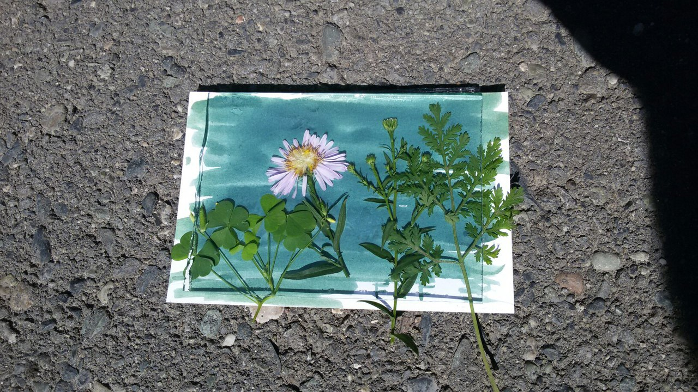
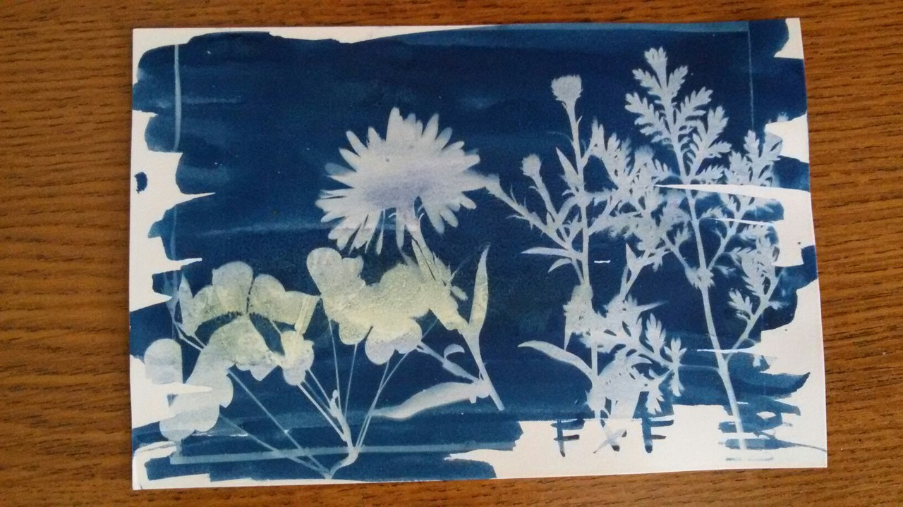
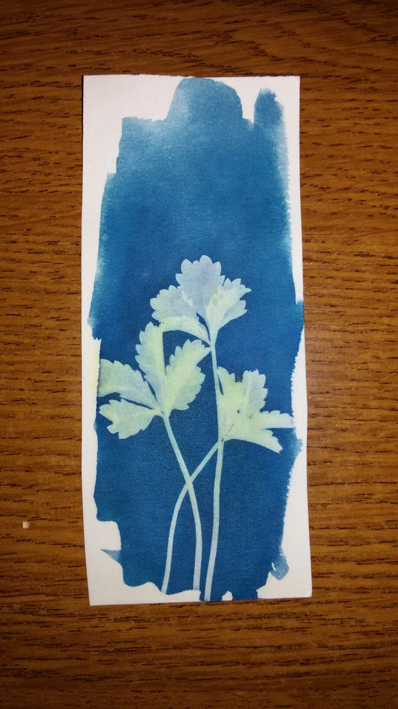

Ну а теперь то что у меня из этого вышло
Взял за основу следующий раствор, каждой соли растворяем по 30гр на 100мл воды.
Дальше по мере необходимости сливаем равные части раствора, столько сколько нам
его понадобится, так как смешанный раствор особо не хранится, потемнеет.
Ну а дальше просто красим любую бумагу, ткань, дерево, да вообще все, на чем может держаться водный раствор

Потом сушим бумагу в темноте, и желательно под прессом, ибо корежит мокрую бумагу то.
Хотя я и свежеокрашенную бумагу использовал.
Наносить много раствора не нужно, нам особо не нужно что бы оно глубоко в бумагу впиталось.
Ну и собственно далее, на готовую бумагу кладем предметы "тени" которых и хотим получить.
накрываем все это дело стеклом, в случае с травой лучше хорошо прижать
так как чем плотнее тем четче контуры, помним же что тени имеют свойство размываться по краям
Ну и выставляем все это дело на солнце или под УФ лампу. Хотя даже солнце из-за небольшой облачности, работает в разы быстрее и эффективней.

промываем....

Кстати о промывке, в статье сказано просто промыть, но есть момент
Я сначала промываю водой, рисунок проявляется все нормально, но если после первого ополаскивания рисунок прокапать 3% перекисью то рисунок проявится сильней и контрастней.
Не забываем хорошо промывать, а то от ККС останутся желтые разводы.
А если наш отпечаток прополоскать в растворе лимонки, то он осветлится с темно-синего до голубого.

Если нужно что то в белом подкорректировать то можно кисточкой смоченной в щелочи осветлить там где надо
или надпись дарственную написать ну и т. п.

 Быстрый ответ
Быстрый ответ